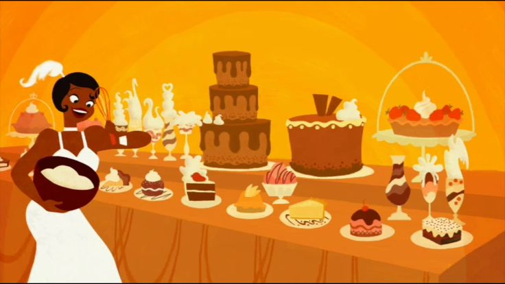

Conheça minha biblioteca de músicas!
De eletrônica até sertanejo, as melhores músicas estão aqui!
No dia em que eu saí de casa, minha mãe me disse...
Filho, vem cá!
Passou a mão em meus cabelos Olhou em meus olhos Começou falar Por onde você for eu sigo Com meus pensamentos Sempre onde estiver. Em minhas orações Eu vou pedir a Deus Que ilumine os passos seus
Eu sei que ela nunca compreendeu Os meus motivos de sair de lá Mas ela sabe que depois que cresce O filho vira passarinho e quer voar Eu bem queria continuar ali Mas o destino quis me contrariar E o olhar de minha mãe na porta Eu deixei chorando a me abençoar
Lembre de mim
Lembre de mim Hoje eu tenho que partir Lembre de mim Se esforce pra sorrir Não importa a distância Nunca vou te esquecer Cantando a nossa música O amor só vai crescer Lembre de mim Mesmo se o tempo passar Lembre de mim Se um violão você escutar Ele, com seu triste canto Te acompanhará E até que eu possa te abraçar Lembre de mim
Estou quase lá

Lembre de mim Hoje eu tenho que partir Lembre de mim Se esforce pra sorrir Não importa a distância Nunca vou te esquecer Cantando a nossa música O amor só vai crescer Lembre de mim Mesmo se o tempo passar Lembre de mim Se um violão você escutar Ele, com seu triste canto Te acompanhará E até que eu possa te abraçar Lembre de mim